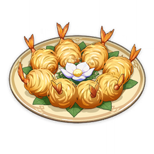
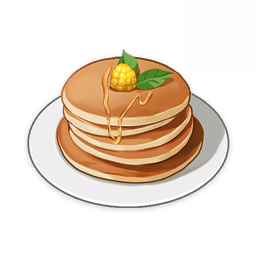

Golden Shrimp Balls

A deep-fried shrimp dish.
Tea Break Pancake

A stack of round pancakes.
A list of my favorite Genshin Impact dishes! Credit for all images and descriptions goes to the Genshin Impact Wiki.
A deep-fried shrimp dish.
A stack of round pancakes.